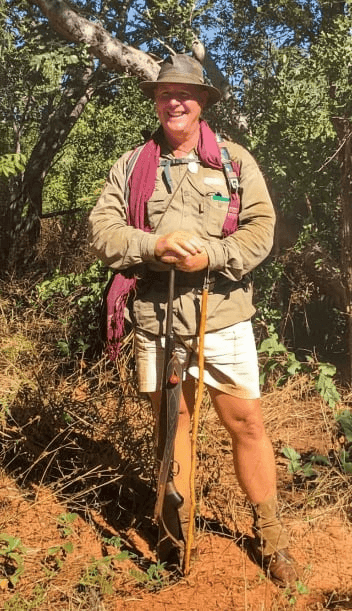

Authentic Zimbabwe Safaris with your Private Wilderness Guide

Your Bespoke Wilderness Expeditions, Designed Around You
We curate authentic journeys across Zimbabwe's premier National Parks, including Zambezi, Hwange, Mana Pools, Gonarezhou, and more. Whether you seek a single-day game drive or bush walk, or a multi-day immersive expedition across the expanse of Zimbabwe, we meticulously liaise, organise, and coordinate every detail to bring your African dream to life.
View our photography collections here
Loading Gallery...
With 30+ years of experience, Dean invites you to master the Old Way of the bush. Learn the ancient language of the land by reading scuffs, signs, and the stories told by the red earth in an immersive on-foot masterclass using nothing but your senses.
As a Pro Guide and birding specialist, Dean transforms every walk into a masterclass in natural history. Go beyond the sightings to understand the "Why" behind the wild, from complex avian social structures to the intricate ecological tapestry of Zimbabwe.
The magic extends far beyond the trail. Dean creates an inspirational atmosphere that leaves lasting impressions around the evening fire. Experience legendary wit and humour during famous sundowners as tales of the wild come alive under a canopy of stars.
In a world of "green-washed" travel, Dean offers a perspective forged in decades of frontline Black Rhino and Victoria Falls conservation. Navigate the wild with a clear conscience, gaining grassroots insights into the real challenges and triumphs of African wildlife protection.
Contact your Safari Liaison, Justine McGregor
Justine McGregor, our Lead Coordinator and Dean’s partner, is your dedicated port of contact. With decades of experience as a premier Zimbabwe safari operative, she ensures every detail of your safari is seamless.
By enquiring, you consent to direct communication via WhatsApp/Email. We do not store your data on this website server in accordance with SI 155 of 2024.
By enquiring, you consent to direct communication via WhatsApp/Email. We do not store your data on this website server in accordance with SI 155 of 2024.
From tracking the elusive cries of lions in the night to the expert guiding process at dawn, Dean reveals how the safari experience begins long before the first light.
A thank you to Graham Elliott for this snippet with Dean, https://www.youtube.com/@GElliottPhotography